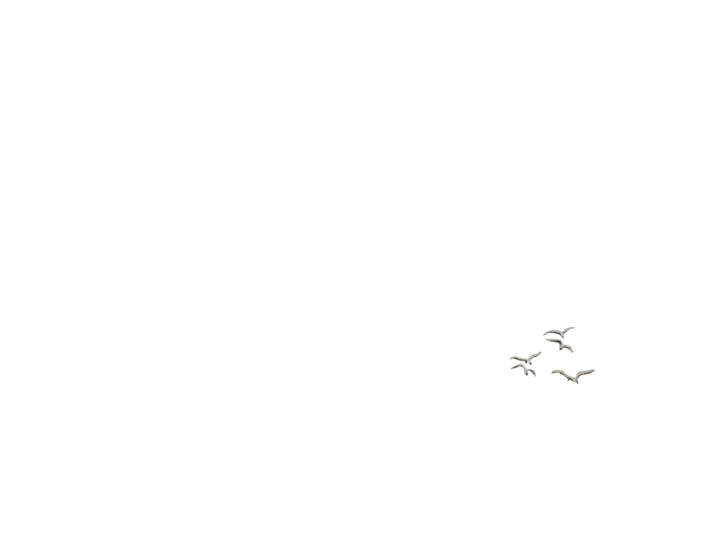
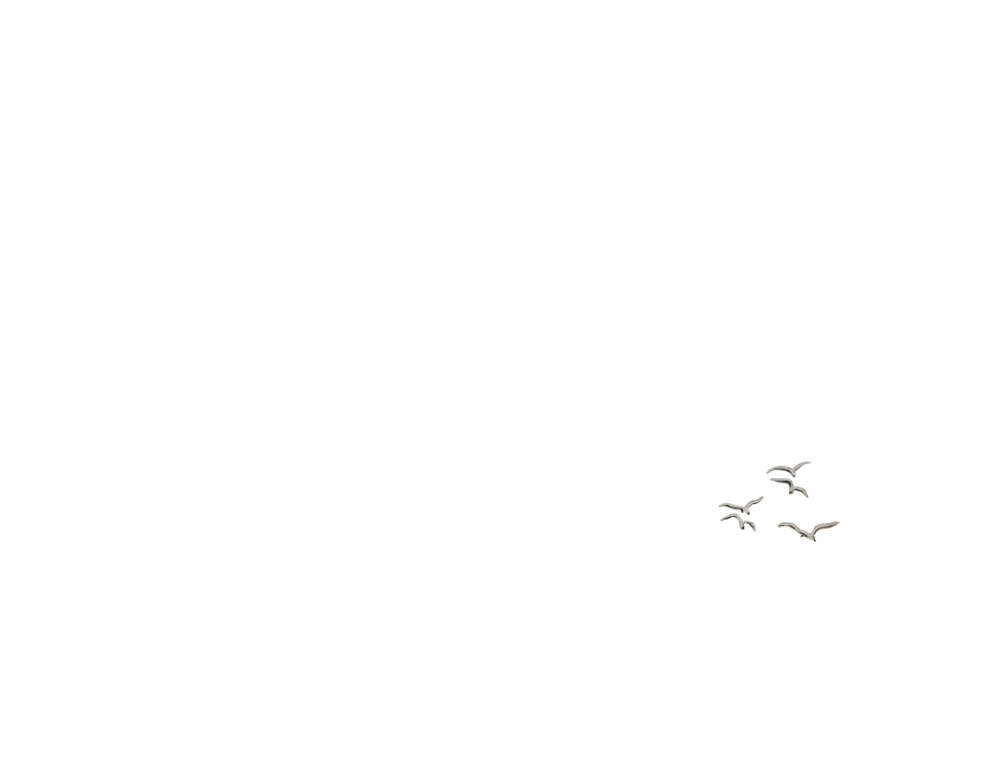

Aquarelle
Peinture à l'eau, translucide, fluide, créant des œuvres lumineuses.
 


J’ai commencé à peindre en 2017, j’avais cette envie depuis mon enfance.
J’ai fréquenté plusieurs ateliers d’aquarelle pendant trois ans. J’ai eu la chance d’y rencontrer mon cher professeur d’aquarelle et de dessin Jacques Grégoire, regretté de tous. Mais pas que :
A mes tout débuts l’atelier » Hougardy » de Momalle , où je me suis fait beaucoup d’amis et amies et au fil du temps ; L’atelier Frédéric Bage ; Quelques stages avec l’excellent aquarelliste Cao Be An,...
Actuellement, j’ai opté pour la peinture à l’huile miscible à l’eau. Je suis très fascinée, et inspirée par le peintre William Turner.
Je continuerais mon chemin artistique en essayant à tout prix d’améliorer ma technique et mon style.
Artistiquement votre !


Peinture à l'huile sur toile : Technique artistique classique et durable.